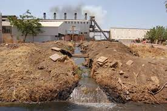
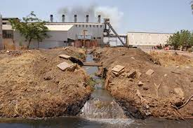

Land resource is important because humans not only live but also perform all economic activities on land.It is the place we stand.Land provides habitation to a variety of flora and fauna.Land has become a limited resource because the degradation of land is taking place at a faster pace.
ExploreTrees help filter to the air we breath and water we drink.They absorb toxic carbon dioxide and provide us with pure and free oxygen.Trees contribute to their environment by providing oxygen, improving air quality, climate amelioration, conserving water, preserving soil, and supporting wildlife.
More InfoDo you know 75% of Earth's Land areas Are degraded?Land pollution is a major problem around the world and is caused by a variety of factors.Keep reading to learn more.
Learn MoreLand Pollution refers to the deterioration of the earth’s land surfaces.It refers to all forms of pollution affecting any type of soil: agricultural, forestry, urban, etc.We may not be able to see the effects with clarity, but the land is being polluted and abused constantly, and we are unable to calculate the damages incurred.Furthermore, it occurs mainly due to the indirect and direct effects of human activities,when we misuse the land resources, land pollution happens.

Generally, the material and liquid wastes that are disposed of on land and water cause the contamination of the land as most of the disposed of wastes are not biodegradable but non-biodegradable and toxic. Human activities are the main causes of land pollution:
1.Agriculture
2.Mining
3.Deforestation
4.Industrial
5.Urbanization
6.Waste Disposal
 

Healthy air is replaced by smoke and soot that only contains harmful substances emitted through industries especially. Soil pollution is also one of the main causes of the formation of barren land, which is useless and unproductive.Contamination of groundwater, loss of topsoil, water nutrient enrichment and increased risk of wildfires are among the consequences of land pollution.
Land pollution also caused developmental deficiency in children.Land pollution can lead to the formation of breeding grounds for rodents, flies, and mosquitoes. These pollute the environment even further and cause dangerous diseases like malaria, dengue, and plague. The potential effects of soil contamination on human health include breathing disorders, birth defects, skin diseases, and cancer.
The animal kingdom has suffered most in the past decades.An increase in wildfires, due to polluted areas often becoming very dry.Animals face a serious threat with regard to the loss of habitat and natural environment.As land pollution and soil erosion progress, animals are forced to shift habitats and adapt to new conditions.Several species are also pushed to the verge of extinction, due to no homeland.
When land is polluted, it directly or indirectly affects the climate patterns.It is very hazardous and can lead to the loss of ecosystems. They all have been damaged and destroyed at great lengths so much so that it is directly affecting the climate of the planet and, therefore, contributing greatly to increasing global warming.The emission of carbon dioxide is soaring so much that it is heating our planet at a tremendous rate.